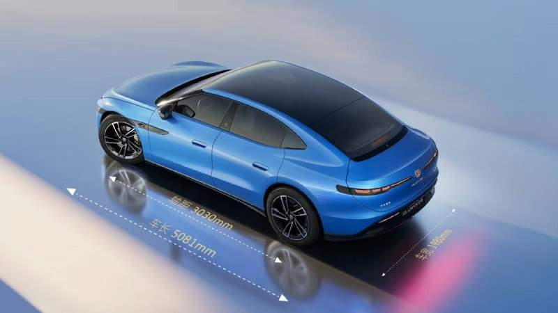
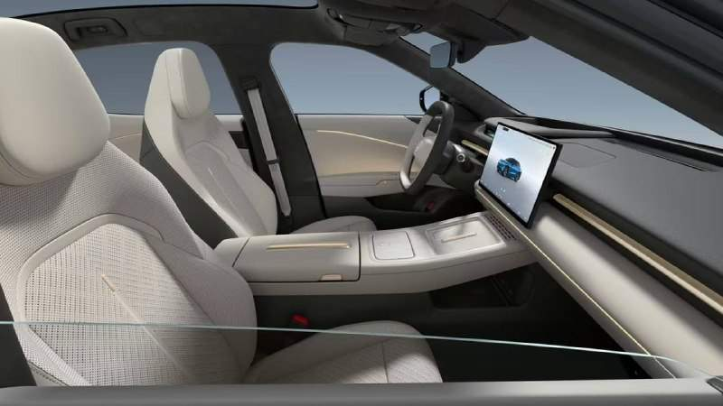

«Вот такая Барселона». Погромы с грабежами и весёлая тусовка разместились на одной улице Барселоны. «И всем пофиг». @bankrollo
«Вот такая Барселона». Погромы с грабежами и весёлая тусовка разместились на одной улице Барселоны. «И всем пофиг». @bankrollo
Путин второй год подряд не будет выступать с ежегодным посланием Федеральному собранию. Об этом сообщил Песков. Невыступление считается нарушением конституционной нормы, поскольку статья 84 предписывает президенту обращаться с посланиями ежегодно. Однако Конституция и законы не предусматривают никакой юридической ответственности за пропуск послания, отмечают юристы. @bankrollo
Банковские депозиты при текущих процентных ставках стали «магнитом» для капитала, вымывая средства из реального сектора. Компании всё активнее выбирают депозиты как способ заработка, отказываясь от модернизации оборудования или расширения производства. Объем средств населения и бизнеса в банках по состоянию на 1 сентября составлял 135,4 трлн рублей, следует из обзора Банка России о развитии банковского сектора. @bankrollo


Электрокар по цене Lada Azimut выпустил Volkswagen. В Китае пятиметровый седан ID.Unyx 09 стоит всего 2,2 млн рублей. За эти деньги покупатель получает 308 л.с., запас хода до 755 км, автопарковку и огромный 85-дюймовый проекционный дисплей. Всего за пять минут зарядки автомобиль может получить запас энергии на 250 км пути. Полноприводная версия выдаёт уже 503 л.с. @bankrollo
Британскую компанию N. M. Rothschild & Sons Limited привлекли к подготовке приватизации двух системно значимых банков Украины — Sense Bank и Укргазбанка. Соответствующие документы опубликовало министерство финансов страны. Укргазбанк занимает 7-е место в стране по размеру активов, а Sense Bank — 9-е место. Государственная доля в Укргазбанке составляет почти 95%, Sense Bank полностью принадлежит государству. @bankrollo
Трамп превратил Белый дом в нечто, выглядящее, будто Саддам Хусейн открыл там сеть ресторанов Cheesecake Factory: золото повсюду, заявил Обама. Экс-президент США впервые выступил на митинге в канун промежуточных выборов, которые состоятся 3 ноября. В своей речи Обама также обвинил Трампа в высоких ценах на нефть, раскритиковал за решение развязать войну в Иране, обвинил в коррупции и желании обогатить себя и свою семью на посту руководителя страны. @bankrollo
Аутизм массово выявляют у россиян во взрослом возрасте. Люди старше 30 лет узнают о расстройстве внезапно, некоторые даже не подозревали об этом. Чаще всего его диагностируют у женщин. Медики объясняют это тем, что в детстве девочки подстраиваются под окружение и скрывают особенности развития, что приводит к истощению, тревоге и депрессии. Поэтому расстройство долго остаётся незамеченным. В 2025 году официальный диагноз РАС был у 6 920 взрослых (1 из 16 791 человека), что в 132 раза ниже распространённости, принятой ВОЗ. @bankrollo
Умер рэпер Михаил Маваши. Ему был 41 год. Он читал о ЗОЖ и турниках. @bankrollo
Подготовка трехстороннего саммита Путина, Си Цзиньпина и Трампа уже началась — Ушаков. @bankrollo
США перестали замедлять Starlink для Украины, теперь он стабильно работает на скорости более 400 км/ч — Минобороны Украины. @bankrollo https://t.me/bankrollo/68886 Илон Маск — миротворец, заявил спецпредставитель Путина Дмитриев. @bankrollo
В России не могут уволить сотрудника, если он пил пиво на работе — юристы. В Трудовом кодексе не существует прямого запрета на распитие алкоголя в офисе, а уволить могут за появление на работе в состоянии опьянения, но факт опьянения нужно ещё доказать. @bankrollo
70% уехавших после начала СВО россиян вернулись обратно «с поджатыми хвостами», заявил депутат Госдумы Матвейчев. «Когда они уезжали в 2022 году, я говорил: „Пусть бегут, они вернутся оттуда патриотами“. Большая часть уже вернулась — процентов 70», — сказал депутат. По словам Матвейчева, россияне решили вернуться из-за «бытовых и бюрократических сложностей, отсутствия безопасности и сервиса, финансовых трудностей, а также разочарования в западном образе жизни». «Они сбежали обратно из Европы в ужасе, говорят, что теперь Москву ни на что не променяют, намучились. С поджатыми хвостами сидят себе тихо», — добавил депутат. @bankrollo
В Москве начнутся ежедневные снегопады уже с 3 ноября — синоптики. @bankrollo
В бета-версии Telegram появилась алгоритмическая лента новостей. @bankrollo
Минцифры составило план по защите дата-центров от БПЛА. Из-за новых затрат интернет подорожает на 10% без учёта инфляции, считают участники рынка. Минцифры разделило все дата-центры на три категории: стратегические объекты, экономически или социально важные объекты и корпоративные. Стратегические ЦОДы надо будет прятать под землёй, в скалах или бункерах. @bankrollo
Сделки по активам Лукойла и добыче газа на Аляске будут заключены с Россией рано или поздно — Трамп. @bankrollo
Зеленский: Украина никогда не согласится на нейтралитет и ограничение армии. Это наши «красные линии». @bankrollo
Зеленский согласился обсудить с Путиным «обмен территориями» на Украине. @bankrollo
Вучич проиграл на выборах в Сербии и признал поражение. Победила партия «Студенческий список», которую поддерживали протестующие студенты. @bankrollo